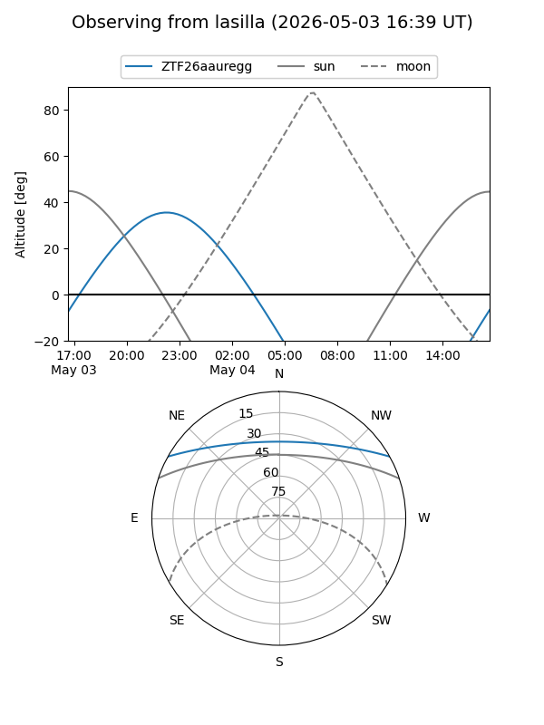
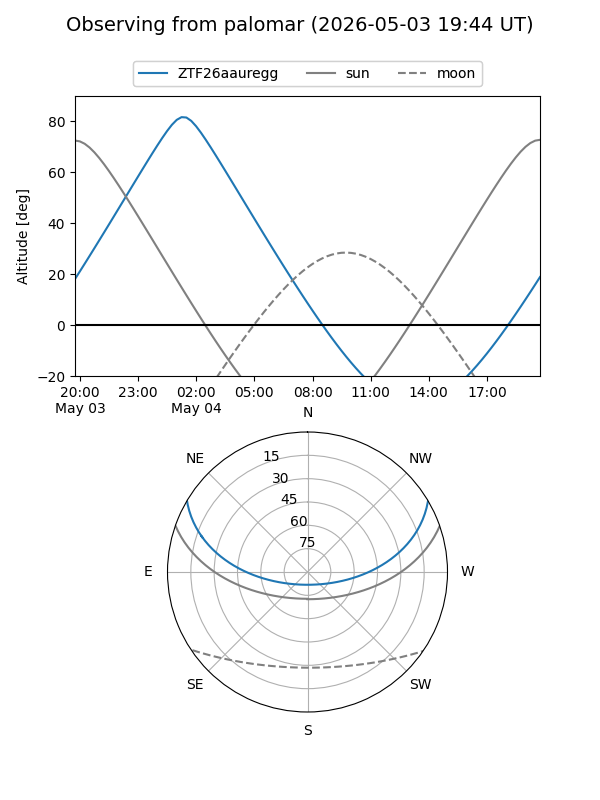

ZTF26aauregg
Target ZTF26aauregg at 2026-05-04 04:47
Aliases and brokers:
FINK: link
Lasair: link
ALeRCE: link
alt names
ZTF26aauregg (ztf,fink_ztf)
Coordinates:
equatorial (ra, dec) = 124.7086,+25.22658
equatorial (HMS+DMS) = 08:18:50.06,+25:13:35.68
galactic (l, b) = (197.8802,+29.60199)
Flags:
Photometry:
last ztfg=18.60
2 ztfg detections
Lightcurve
Visibility


Additional plots